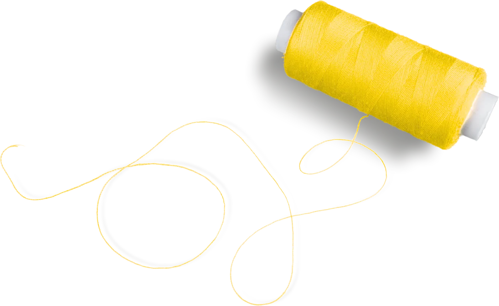
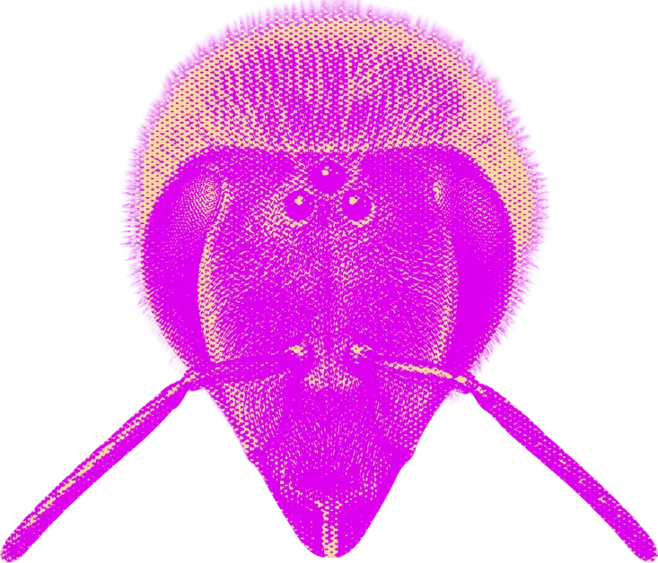
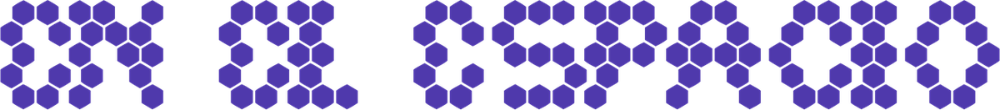
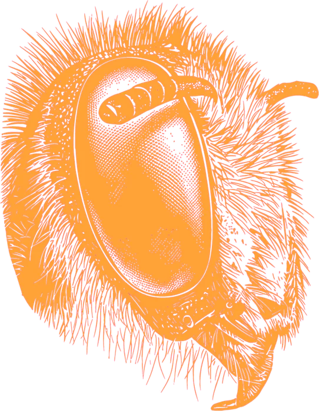
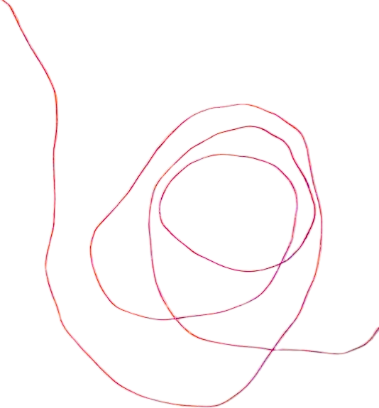
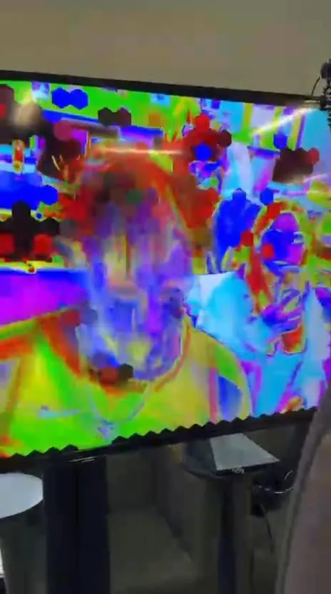
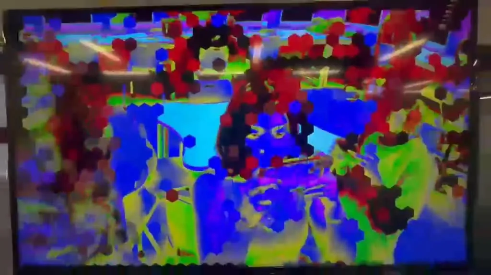
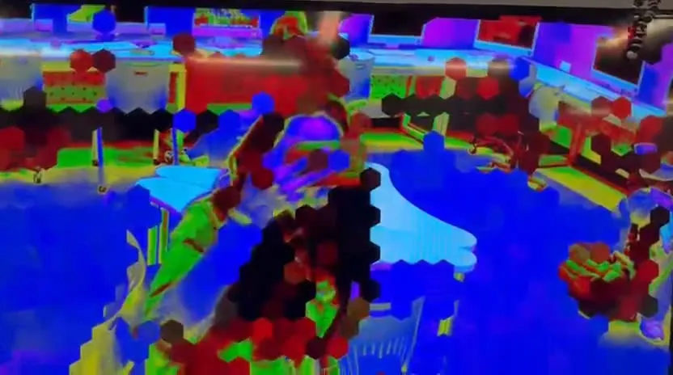
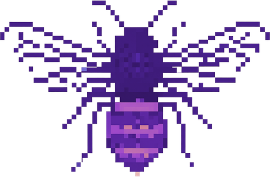

Garage inmersivo
El Garage inmersivo funciona como una colmena viva, una experiencia colectiva sostenida en una orientación escópica distinta.

visión ABEJASse forma un tecno-ecosistema relacional donde la obra brota espontáneamente del cruce entre el bordado y la mirada de una abeja.
Las abejas no comparten nuestra ilusión cromática; su biología ocular opera con LUZ ULTRAVIOLETA
Bajo esa banda invisible, el mundo vegetal despliega
“Guías de polinización”
pequeños destellos de luz que marcan el camino exacto para el polinizador (Carrasco, 2004).

cada bordado representa un omatidio: una diminuta unidad visual de esos ojos compuestos a través del software
Con hilos se simulan físicamente esas guías de polinización y se da paso a una creación verdaderamente colectiva.


una cámara captura y alimenta al software. Traduce los trazos analógicos de los hilos en una masa de luz mutante que responde en directo a cualquier movimiento.
abrir el software



Todo este despliegue propone una orientación escópica diferente: un repensamiento de la mirada que desplaza el antropocentrismo para habitar la alteridad desde una perspectiva no jerárquica (Chamat Garcés, 2025).